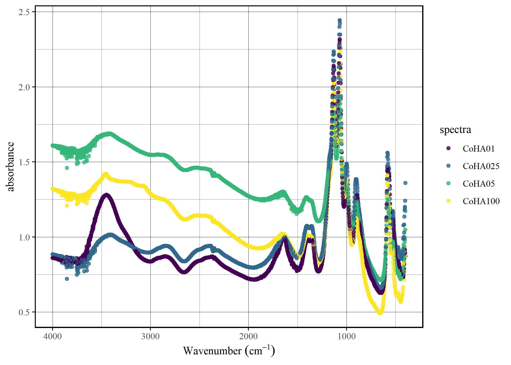

The goal of tidyspec is to provide a friendly pipeline for spectroscopy analysis using the tidy data philosophy.
Installation
You can install from CRAN:
install.packages("tidyspec")You can install the development version of tidyspec from GitHub with:
# install.packages("devtools")
devtools::install_github("marceelrf/tidyspec")About
The tidyspec package was design to enable the data analysis of spectroscopy data (as IR, Raman, NMR) with the tidy-data format. There are 6 families of functions in tidyspec, all starting with spec_:
Transformation: Convert data from absorbance to transmittance (
spec_abs2trans) & from transmittance to absorbance (spec_trans2abs).Normalize: Normalize the data to range 0-1 (
spec_norm_01), normalize between a custom range (spec_norm_minmax), or normalize to have a standard deviation of one (spec_norm_var).Baseline correction: Correct the baseline using the the rolling ball algorithm (
spec_blc_rollingBall) or Iterative Restricted Least Squares (spec_blc_irls). The functionspec_blreturn the baseline vectors (spec_bl_rollingBall,spec_bl_irls).Smooth correction: Smooth the data using the average window (
spec_smooth_avg) or using the Savitzky-Golay algorithm (spec_smooth_sga).Derivative: Create differential data from the spectra (
spec_diff).Preview: Preview your data while applying changes statically (
spec_smartplot) or interactively (spec_smartplotly).Import/Export: Import spectra data from common data formats, like csv, txt, tsv, xslx and xls, with
spec_read. Export functions will be created in next moment, but user can easily use readr or writexl functions.
The function set_spec_wn simplifies the use of functions by globally defining the column that contains the wave numbers. User can check the wavenumber column with check_wn_col.
Example
This is a basic example which shows you how to solve a common problem:
The data
head(CoHAspec)
#> # A tibble: 6 x 5
#> Wavenumber CoHA01 CoHA025 CoHA05 CoHA100
#> <dbl> <dbl> <dbl> <dbl> <dbl>
#> 1 399. 0.871 1.36 1.17 1.05
#> 2 401. 0.893 1.24 1.05 0.925
#> 3 403. 0.910 1.20 0.997 0.876
#> 4 405. 0.914 1.19 0.982 0.867
#> 5 407. 0.908 1.18 0.965 0.857
#> 6 409. 0.887 1.14 0.936 0.828Set the wavenumber column
set_spec_wn("Wavenumber")
#> Successfully set 'Wavenumber' as the default wavenumber column.
check_wn_col()
#> The current wavenumber column is: WavenumberPlot the data
spec_smartplot(CoHAspec)
#> Warning: wn_col not specified. Using default value: Wavenumber.
#> This message is shown at most once every 2 hours.
#> Warning: xmin not specified. Using default value: 399.1992.
#> This message is shown at most once every 2 hours.
#> Warning: xmax not specified. Using default value: 3999.706.
#> This message is shown at most once every 2 hours.
The future of tidyspec
Our plan is for tidyspec to be the first step toward a complete ecosystem for spectral data analysis. For spectral band analysis, we are creating the bandspec package that handles different band profiles. We also intend to create a package focused on producing publication-level graphics for spectral data. We haven’t thought of a name yet, so we welcome suggestions!